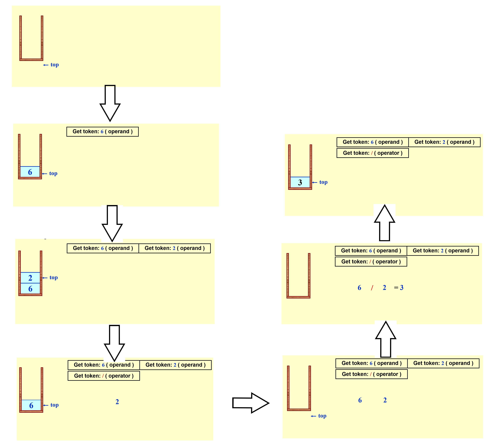

Chap 3 Lists, Stacks, and Queues¶
Abstract Data Type (ADT)¶
数据类型(Data Type) = {对象(Objects)} \(\cup\) {运算(Operations)}
抽象数据类型(ADT) 是将对象和运算的规范(就是我们定义的函数)和其表示和实现(个人理解为接口(Interface)，对函数的调用等等)分离开来的一种数据类型
The List ADT¶
Simple Array Implementation of Lists¶
- Objects: {\(item_0, item_1, \dots, item_{N - 1}\)}
- Operations:
Finding_the_length：即求\(N\)Printing：打印列表所有元素Making_an_empty：建立空列表Finding：查找第\(k\)项，\(0 \le k < N\)Inserting：在第\(k\)项后插入新的项，\(k\)的范围同上Deleting：删除一项Finding_next：查找下一个项Finding_previous：查找上一个项，用于删除列表首项
时间复杂度： + 查找：\(O(1)\) + 插入&删除：\(O(N)\) —— ”牵一发而动全身“
因此，对于频繁进行插入和删除的列表，我们需要换一种实现形式——链表(Linked List)
Linked Lists¶
❗注意：
+ 链表相比数组占用空间更多（存储指针），但它不要求空间连续
+ 虽然查找时间慢(\(O(N)\))，但插入和删除很快(\(O(1)\))，通过下面图示可以较为直观地感受到
+ 最后一项的指针指向NULL
+ 对于==头指针==，我们不将第一项作为头指针，而是采用一个虚拟节点(dummy node)。这个结点数据域为空，指针指向列表中的第一项。这样做的好处有：
+ 删除首项时无需使用Finding_previous()了
+ \(\dots\)
注：除非作特殊说明，fds笔记中所有链表的实现应该都以dummy node为头指针
图示：


代码实现：
// 链表的类型声明，一般放在.h文件中
#idndef _List_H
struct Node;
typedef struct Node *PtrToNode;
typedef PtrToNode List;
typedef PtrToNode Position;
List MakeEmpty(List L);
int IsEmpty(List L);
int IsLast(Position P, List L);
Position Find(ElementType X, List L);
void Delete(ElementType X, List L, Position P);
Position FindPrevious(ElementType X, List L);
void Insert(ElementType X, List L, Position P);
void DeleteList(List L);
Position Header(List L);
Position First(List L);
Position Advance(Position P);
ElementType Retrieve(Position P);
#endif
// 链表的具体实现，一般放在.c文件中
// 节点
struct Node
{
ElementType Element;
Position Next;
};
// 检查链表是否为空
int IsEmpty(List L)
{
return L->Next == NULL;
}
// 检查节点P是否为最后一项
// 注意到链表L没有用上，放在这里以防特殊情况的处理
int IsLast(Position P, List L)
{
return P->Next == NULL;
}
// 查找数据X在链表L中的位置
Position Find(ElementType X, List L)
{
Position P;
P = L->Next;
while (P != NULL && P->Element != X)
P = P->Next;
return P;
}
// 删除链表L中的数据X
void Delete(ElementType X, List L)
{
Position P, TmpCell;
P = FindPrevious(X, L);
if (!IsLast(P, L))
{
TmpCell = P->Next;
P->Next = TmpCell->Next;
Free(TmpCell); // 删除节点时不要忘记释放内存！！！
}
}
// 查找前一项
Position FindPrevious(ElementType X, List L)
{
Position P;
P = L;
while (P->Next != NULL && P->Next->Element != X)
P = P->Next;
return P;
}
// 在位置P后插入新数据X
void Insert(ElementType X, List L, Position P)
{
Position TmpCell;
TmpCell = (PtrToNode)malloc(sizeof(struct Node)); // 记住语法
if (TmpCell == NULL)
FatalError("Out of Space!!!"); // 这里用到处理错误信息的自定义函数
TmpCell->Element = X;
TmpCell->Next = P->Next;
P->Next = TmpCell;
}
Common Errors¶
- 内存访问错误(Memory Access Violation) 或段错误(Segmentation Violation)——可能因为==错误的初始化==，或者==间接引用指针==（该指针已被
free()了） - 判断何时使用或不用
malloc()- 如果想要创建一个之前未声明的指向结构的指针，需要用到
malloc() - 如果想要用指针遍历一遍链表，则无需使用
malloc()注意：
malloc()是给指针分配存储空间，而不是结构
- 如果想要创建一个之前未声明的指向结构的指针，需要用到
- 记得使用
free()，尤其是删除节点时，否则会带来严重的问题
Double Linked Circular Lists¶

作用：简化删除节点的过程
Applications¶
The Polynomial ADT¶
- Objects：\(P(x) = a_1x^{e_1} + \dots + a_nx^{e_n}\)，有一组有序对\(<e_i, a_i>\)，其中\(a_i\)称为系数(coefficient)；\(e_i\)称为指数(exponent)，它是非负数
- Operations：
Finding_degree：判断多项式的最高次AdditionSubtractionMultiplicationDifferentiation：求导
表示形式：
// 1. 数组——编写加法、乘法等函数较为简单，但会有很大的空间浪费
typedef struct
{
int CoeffArray[MaxDegree + 1];
int HighPower;
} *Polynomial;
// 2. 链表——节省空间，但编写加法、乘法和函数较为困难
typedef struct Node *PtrToNode;
struct Node
{
int Coefficient;
int Exponent;
PtrToNode Next;
};
typedef PtrToNode Polynomial; // 节点根据指数大小排序好
// 下面用数组形式编写加法和乘法函数
// Addition
void add_polynomial( POLYNOMIAL poly1, POLYNOMIAL poly2,POLYNOMIAL poly_sum )
{
int i;
zero_polynomial( poly_sum );
poly_sum->high_power = max( poly1->high_power, poly2->high_power);
for( i=poly_sum->high_power; i>=0; i-- )
poly_sum->coeff_array[i] =
poly1->coeff_array[i] + poly2->coeff_array[i];
}
// Multiplication
void mult_polynomial( POLYNOMIAL poly1, POLYNOMIAL poly2,POLYNOMIAL poly_prod )
{
unsigned int i, j;
zero_polynomial( poly_prod );
poly_prod->high_power = poly1->high_power + poly2->high_power;
if( poly_prod->high_power > MAX_DEGREE )
error("Exceeded array size");
else
for( i=0; i<=poly->high_power; i++ )
for( j=0; j<=poly2->high_power; j++ )
poly_prod->coeff_array[i+j] +=
poly1->coeff_array[i] * poly2->coeff_array[j];
}
// 作业题中要求编写链表实现的加法函数，这是我的代码：
Polynomial Add( Polynomial a, Polynomial b )
{
PtrToNode head = (PtrToNode)malloc(sizeof(struct Node));
head->Next = NULL;
Polynomial ans = head;
Polynomial cur = head;
while (a->Next != NULL && b->Next != NULL)
{
PtrToNode temp = (PtrToNode)malloc(sizeof(struct Node));
temp->Next = NULL;
if (a->Next->Exponent > b->Next->Exponent)
{
temp->Coefficient = a->Next->Coefficient;
temp->Exponent = a->Next->Exponent;
a = a->Next;
}
else if (a->Next->Exponent < b->Next->Exponent)
{
temp->Coefficient = b->Next->Coefficient;
temp->Exponent = b->Next->Exponent;
b = b->Next;
}
else
{
temp->Coefficient = a->Next->Coefficient + b->Next->Coefficient;
if (temp->Coefficient == 0)
{
a = a->Next;
b = b->Next;
free(temp);
continue;
}
else
{
temp->Exponent = a->Next->Exponent;
}
a = a->Next;
b = b->Next;
}
// printf("%d %d\n", cur->Next->Coefficient, cur->Next->Exponent);
// printf("%d\n", head->Next->Exponent);
cur->Next = temp;
cur = cur->Next;
}
while (a->Next != NULL)
{
PtrToNode temp = (PtrToNode)malloc(sizeof(struct Node));
temp->Coefficient = a->Next->Coefficient;
temp->Exponent = a->Next->Exponent;
temp->Next = NULL;
cur->Next = temp;
a = a->Next;
cur = cur->Next;
}
while (b->Next != NULL)
{
PtrToNode temp = (PtrToNode)malloc(sizeof(struct Node));
temp->Coefficient = b->Next->Coefficient;
temp->Exponent = b->Next->Exponent;
temp->Next = NULL;
cur->Next = temp;
b = b->Next;
cur = cur->Next;
}
// printf("%d %d\n", head->Next->Coefficient, head->Next->Exponent);
return head;
}
Radix Sort¶
等到上完排序那章再回过来看吧，现在也看不太懂🐶
Multilists¶
^222af4
情境：有40000名学生和2500门课，要求列出每门课学生的名单，以及每位学生的课表
如果用数组(\(40000 \times 2500\))做，会浪费巨大的空间。
因此用循环链表，而且对于链表的每个节点，有两组指针：一组指向这门课的其他学生，另一组指向这位学生的其他课程。
图示：

看起来很优雅，但实现起来困难重重，很难编写好代码
Cursor Implementation of Linked Lists¶
对于一些没有指针类型的编程语言，如何做到不用指针实现链表呢？——用游标实现(Cursor Implementation)!
特征：
+ 链表为一组结构，每个结构包含一个数据域和指针域（指向下一个结构）
+ 通过malloc()得到新的结构，且通过调用free()释放

重点理解节点分配和释放的过程（现在我还没太理解😵）

代码实现：
// 链表的类型声明，一般放在.h文件中
#idndef _Cursor_H
typedef int PtrToNode;
typedef PtrToNode List;
typedef PtrToNode Position;
void InitializeCursorSpace(void);
List MakeEmpty(List L);
int IsEmpty(List L);
int IsLast(Position P, const List L);
Position Find(ElementType X, const List L);
void Delete(ElementType X, List L);
Position FindPrevious(ElementType X, const List L);
void Insert(ElementType X, List L, Position P);
void DeleteList(List L);
Position Header(const List L);
Position First(const List L);
Position Advance(const Position P);
ElementType Retrieve(const Position P);
#endif
// 链表的具体实现，一般放在.c文件中
// 节点
struct Node
{
ElementType Element;
Position Next;
};
struct Node CursorSpace[SpaceSize];
// 假设游标分配和释放函数已有函数原型
// 游标分配
static Position CursorAlloc(void)
{
Position P;
P = CursorSpace[0].Next;
CursorSpace[0].Next = CursorSpace[P].Next;
return P;
}
// 游标释放
static void CursorFree(Position P)
{
CursorSpace[P].Next = CursorSpace[0].Next;
CursorSpace[0].Next = P;
}
// 检查链表是否为空
int IsEmpty(List L)
{
return CursorSpace[L].Next == 0;
}
// 检查节点P是否为最后一项
// 注意到链表L没有用上，放在这里以防特殊情况的处理
int IsLast(Position P, List L)
{
return CursorSpace[P].Next == 0;
}
// 查找数据X在链表L中的位置
Position Find(ElementType X, List L)
{
Position P;
P = CursorSpace[L].Next;
while (P && CursorSpace[P].Element != X)
P = CursorSpace[P].Next;
return P;
}
// 删除链表L中的数据X
void Delete(ElementType X, List L)
{
Position P, TmpCell;
P = FindPrevious(X, L);
if (!IsLast(P, L))
{
TmpCell = CursorSpace[P].Next;
CursorSpace[P].Next = CursorSapce[TmpCell].Next;
CursorFree(TmpCell); // 删除节点时不要忘记释放内存！！！
}
}
// 在位置P后插入新数据X
void Insert(ElementType X, List L, Position P)
{
Position TmpCell;
TmpCell = CursorAlloc();
if (TmpCell == 0)
FatalError("Out of Space!!!"); // 这里用到处理错误信息的自定义函数
CursorSpace[TmpCell].Element = X;
CursorSpace[TmpCell].Next = CursorSpace[P].Next;
CursorSpace[P].Next = TmpCell;
}
通常游标实现法比用指针更快，因为没有调用内存管理的程序
Supplements¶
// 逆转链表
List Reverse( List L )
{
Position cur;
Position pre;
Position rear;
cur = L->Next;
while (cur != NULL)
{
rear = cur->Next;
if (cur == L->Next)
cur->Next = NULL;
else
cur->Next = pre;
pre = cur;
cur = rear;
}
L->Next = pre;
return L;
}
The Stack ADT¶
ADT¶
Stack(堆栈)：一种==LIFO(Last-in-First-out)(后进先出)==的列表，即仅在有序列表的顶端(top)进行插入和删除操作
- Objects：拥有0个或多个元素的有限有序列表
- Operations：
Int IsEmpty(Stack S);检查堆栈是否为空Stack CreateStack();创建堆栈DisposeStack(Stack S);MakeEmpty(Stack S);清空堆栈Push(ElementType X, Stack S);插入新元素ElementType Top(Stack S);获得栈顶元素Pop(Stack S);删除栈顶元素
❗注意： + 对空的堆栈使用
Pop或Top操作将会引发==堆栈ADT错误== + 然而，对满的堆栈使用Push操作将会引发==实现错误(implementation error)==
Implementations¶
Linked List Impletation¶
图示：
Push

Top

Pop

代码实现：
// .h文件代码：堆栈ADT的类型声明
#ifndef _Stack_h
struct Node;
typedef struct Node *PtrToNode;
typedef PtrToNode Stack;
int IsEmpty(Stack S);
Stack CreateStack(void);
void DisposeStack(Stack S);
void MakeEmpty(Stack S);
void Push(ElementType X, Stack S);
ElementType Top(Stack S);
void Pop(Stack S);
#endif /* _Stack_h*/
// .c文件代码：链表方式的实现
struct Node
{
ElementType Element;
PtrToNode Next;
};
int IsEmpty(Stack S)
{
return S->next == NULL;
}
Stack CreateStack(void)
{
Stack S;
S = (Stack)malloc(sizeof(struct Node));
if (S == NULL)
FatalError("Out of space!!"); // 自定义函数
MakeEmpty(S);
return S;
}
void MakeEmpty(Stack S)
{
if (S == NULL)
Error("Must use CreateStack first"); // 自定义函数
else
while (!IsEmpty(S))
Pop(S);
}
void Push(ElementType X, Stack S)
{
PtrToNode TmpCell;
TmpCell = (PtrToNode)malloc(sizeof(struct Node));
if (TmpCell == NULL)
FatalError("Out of space!!");
else
{
TmpCell->Element = X;
TmpCell->Next = S->Next;
S->Next = TmpCell;
}
}
ElementType Top(Stack S)
{
if (!IsEmpty(S))
return S->Next->Element;
Error("Empty stack");
return 0; // Return value used to avoid warning
}
void Pop(Stack S)
{
PtrToNode FirstCell;
if (IsEmpty(S))
Error("Empty stack");
else
{
FirstCell = S->Next;
S->Next = S->Next->Next;
free(FirstCell);
}
}
时间复杂度：常数\(O(1)\)
缺点：多次使用malloc()和free()开销太大
改进方法：额外创建一个堆栈，用于存放本来应该free()掉的空间，等到有新的元素需要push的时候就可以用这个“回收站”中的空间，而无需再使用malloc()
Array Impletation¶
不多说，直接放上代码实现
// .h文件代码：堆栈ADT的类型声明
#ifndef _Stack_h
struct StackRecord;
typedef struct StackRecord *Stack;
int IsEmpty(Stack S);
int IsFull(Stack S);
Stack CreateStack(int MaxElements);
void DisposeStack(Stack S);
void MakeEmpty(Stack S);
void Push(ElementType X, Stack S);
ElementType Top(Stack S);
void Pop(Stack S);
ElementType TopAndTop(Stack S);
#endif /* _Stack_h*/
// .c文件代码：(动态分配)数组方式的实现
#define EmptyTOS (-1) // 加括号是为了防止运算顺序的错误
#define MintackSize (5) // 同上
struct StackRecord
{
int Capacity;
int TopOfStack;
ElementType *Array;
};
Stack CreateStack(int MaxElements)
{
Stack S;
if (MaxElemets < MinStackSize)
Error("Stack size if too small");
S = (Stack)malloc(sizeof(struct StackRecord));
if (S == NULL)
FatalError("Out of space!!!");
S->Array = (ElementType *)malloc(sizeof(ElementType) * MaxElements);
if (S->Array == NULL)
FatalError("Out of Space!!!");
S->Capacity = MaxElements;
MakeEmpty(S);
return S;
}
void DisposeStack(Stack S)
{
if (S != NULL)
{
free(S->Array);
free(S);
}
}
int IsEmpty(Stack S)
{
return S->TopOfStack == EmptyTOS;
}
void MakeEmpty(Stack S)
{
S->TopOfStack = EmptyTOS;
}
void Push(ElementType X, Stack S)
{
if(IsFull(S))
Error("Full stack");
else
S->Array[++S->TopOfStack] = X;
}
ElementType Top(Stack S)
{
if (!IsEmpty(S))
return S->Array[S->TopOfStack];
Error("Empty stack");
return 0; // Return value used to avoid warning
}
void Pop(Stack S)
{
PtrToNode FirstCell;
if (IsEmpty(S))
Error("Empty stack");
else
{
S->TopOfStack--;
}
}
// 市面上很多书都会把Pop和Top函数集成到Pop函数上，而本书的作者将两者分开，但他也提供了集成的版本(前面没有写函数原型)
ElementType TopAndPop(Stack S)
{
if(!IsEmpty(S))
return S->Array[S->TopOfStack--];
Error("Empty stack");
return 0; // Return value used to avoid warning
}
注： 1. 堆栈模型必须封装好。也就是说，除了堆栈相关函数外，代码的其他部分不能使用
Array或TopOfStack的变量 2. 在执行Push和Pop(Top)前必须进行错误检查
Applications¶
Balancing Symbols¶
// 这是伪代码，学习一下伪代码的格式
Algorithm
{
Make an Empty stack S;
while (read in a character c)
{
if (c in an opening symbol)
Push(c, S);
else if (c is a closing symbol)
{
if (S is empty)
{
ERROR;
exit;
}
else // stack is okay
{
if (Top(S) doesn't match c)
{
ERROR;
exit;
}
else
Pop(S);
} // end else-stack is okay
} // end else-if-closing symbol
} // end while-loop
if (S is not empty)
ERROR;
}
时间复杂度：\(O(N)\)，这是一个在线算法([[Chap 2 Algorithm Analysis#^9fd2b7|on-line algirithm]])
Postfix Evaluation¶
^f00de4 图示：
这里只列举了 ‘6 2 /’ 的解法
 说明： + 遇到操作数，将其压入堆栈中 + 遇到运算符\(opt\)，弹出堆栈最顶上两个元素\(a, b\)，其中\(top = a\)，然后计算\(c = b\ opt\ a\)，最后将\(c\)压入堆栈中 + 遍历完后缀表达式后，堆栈中应当剩下一个元素，该元素即为最终结果
注：后面讲到[[Chap 4 Trees#^fc61a7|表达式树]]的构建时也采用类似步骤
代码实现：
Infix to Postfix Conversion¶
^01bb22 关键点： + 操作数(operands) 的顺序不变，因此直接输出 + 在堆栈内，高==优先级的运算符(operators) 在==低==优先级运算符的前面 + 注意：如果 ‘(’ ==不在堆栈内，则它的优先级最高；如果它==在堆栈内==，则优先级最低。
具体实现： + 如果待判断的运算符的==优先级高于栈顶运算符(包括‘(’)/==空栈，将其压入堆栈 + 否则如果运算符是 ‘)’ ，则将==栈内'('前的所有运算符==按出栈顺序弹出('('也仅在该情况下才能弹出) + 否则的话，从栈顶开始依次弹出运算符，直到满足条件1，再将该运算符压入堆栈中
补充：上述原则适用于加减乘除四则运算，但不适合幂运算，因为幂运算符^结合方向自右向左
代码实现：
// 直接摘自我的project 2，之后应当还要修改一下
Queue InToPost(char * exp)
{
char * tmp = (char *)malloc(sizeof(char) * VLENGTH); // Containing the variables or constant
Stack s; // The stack for operators, in order to getting the proper order in postfix form
Queue q; // The postfix expression, split them into variables, constants and operators in a queue
char opt; // The operator
char * head = exp; // Cheking if it's the first character in the expression
// Initialization
s = CreateStack();
q = CreateQueue();
tmp[0] = '\0';
while (*exp != '\0') // Traversing the infix expression
{
if (isalnum(*exp)) // Finding the potential variables and constants
{
CharToString(*exp, tmp); // Receiving it
}
else if (*exp == '-' && (exp == head || *(exp - 1) == '(')) // Handling with the case with minus sign
{
Enqueue("0", q);
Push2(*exp, s);
}
else // If it's an operator
{
if (strlen(tmp)) // If there is a variable or a constant
{
if (*exp == '(' && (!strcmp(tmp, "sin") || !strcmp(tmp, "cos") || !strcmp(tmp, "ln"))) // Dealing with math functions
{
Enqueue("0", q);
switch (tmp[0])
{
case 's': // sin
Push2('!', s);
break;
case 'c': // cos
Push2('@', s);
break;
case 'l': // ln
Push2('#', s);
break;
}
}
else
Enqueue(tmp, q); // Outputting it
tmp[0] = '\0'; // Resetting
}
// If it's an empty stack or the priority of the current operator is higher than the top element, or the top element is the left parentheses
if (IsEmpty(s) || priority(*exp) < priority(s->top->operator) || s->top->operator == '(')
Push2(*exp, s); // Pushing the operator into the stack
else if (*exp == ')') // If it's a right parentheses
{
while (s->top->operator != '(') // Poping out all the operators on the left parentheses in the stack
{
opt = Top2(s);
Pop(s);
CharToString(opt, tmp);
Enqueue(tmp, q); // Don't forget to output it!
tmp[0] = '\0'; // Resetting
}
Pop(s); // Don't forget throw the left parentheses out!
while (s->top->operator == '!' || s->top->operator == '@' || s->top->operator == '#') // Coping with math functions, but unluckily, there are still some bugs
{
opt = Top2(s);
Pop(s);
CharToString(opt, tmp);
Enqueue(tmp, q); // Don't forget to output it!
tmp[0] = '\0'; // Resetting
}
}
else // Else Poping out all elements with the higher priority out, until encountering the '(' or the lower one
{
while (s->top->operator != '(' && priority(*exp) >= priority(s->top->operator))
{
opt = Top2(s);
Pop(s);
CharToString(opt, tmp);
Enqueue(tmp, q); // Don't forget to output it!
tmp[0] = '\0'; // Resetting
}
Push2(*exp, s); // Pushing the new one to the stack
}
}
exp++; // Checking the next one
}
// Dealing with the remaining part(important!)
if (strlen(tmp))
{
Enqueue(tmp, q);
tmp[0] = '\0';
}
while (!IsEmpty(s)) // Disposing of the remaining elements in the stack
{
if (Top2(s) != '(' && Top2(s) != ')') // Special case for parentheses
{
opt = Top2(s);
Pop(s);
CharToString(opt, tmp);
Enqueue(tmp, q);
tmp[0] = '\0';
}
else
Pop(s);
}
return q; // Returing the output sequence
}
注： + 这里的代码是针对project的问题“定制”的，因此可能不太具有通用性 + 这里我将得到的后缀表达式存储为队列，是为了方便后续构建表达式树
Function Calls¶
每一次函数调用产生的数据，包括局部变量(Local Variables)和返回地址(Return Address)，都会被存入到==堆栈帧(Stack Frame)==当中，而这个帧会被存到系统堆栈(System Stack) 中。

由于系统不会检查堆栈溢出(overflow)的情况，因此当调用函数过多时会带来灾难性后果（比如漏掉基本情况的递归函数）
尾部递归(Tail Recursion)：递归函数在最后一行进行递归调用。这时系统往往将递归函数改写成循环形式(goto，当然自己写循环时千万别用这个)，见下面的例子：
// Recursion
void PrintList(List L)
{
if (L != NULL)
{
PrintElement(L->Element);
PrintList(L->Next);
}
} // a bad use of recursion
// Iteration
void PrintList(List L)
{
top: if (L != NULL)
{
PrintElement(L->Element);
L = L->Next;
goto top;
} // do NOT do this!
} // compiler removes recursion
虽然解决同一问题，非递归的程序往往快于递归，但递归程序通常更加简单和易于理解
The Queue ADT¶
ADT¶
队列(Queue)：一种==FIFO(First-in-First-out)(先进先出)的列表，即在有序列表的一端插入，另一端删除
+ Objects：拥有0个或多个元素的有限有序列表
+ Operations：
+ Int IsEmpty(Queue Q); 检查队列是否为空
+ Stack CreateQueue(); 创建队列
+ DisposeQueue(Queue Q);
+ MakeEmpty(Queue Q); 清空队列
+ ==Enqueue(ElementType X, Queue Q); 入队
+ ElementType Front(Queue Q); 获得队首元素
+ Dequeue(Queue Q); 出队
Array Implementation of Queues¶
不多说，直接放上代码实现
// .h文件代码：队列ADT的类型声明
#ifndef _Queue_h
struct QueueRecord;
typedef struct QueueRecord *Queue;
int IsEmpty(Queue Q);
int IsFull(Queue Q);
Stack CreateQueue(int MaxElements);
void DisposeQueue(Queue Q);
void MakeEmpty(Queue Q);
void Enqueue(ElementType X, Queue Q);
ElementType Front(Queue Q);
void Dequeue(Queue Q);
ElementType FrontAndDequeue(Queue Q);
#endif /* _Queue_h*/
// .c文件代码：(动态分配)数组方式的实现
#define MintackSize (5) // 加括号是为了防止运算顺序的错误
struct QueueRecord
{
int Capacity;
int Front;
int Rear;
int Size;
ElementType *Array;
};
int IsEmpty(Queue Q)
{
return Q->Size == 0;
}
void MakeEmpty(Queue Q)
{
Q->Size = 0;
Q->Front = 1;
Q->Rear = 0;
}
// 形成循环队列
static int Succ(int Value, Queue Q)
{
if (++Value == Q->Capacity)
Value = 0;
return Value;
}
void Enqueue(ElementType X, Queue Q)
{
if (IsFull(Q))
Error("Full Queue");
else
{
Q->Size++;
Q->Rear = Succ(Q->Rear, Q);
Q->Array[Q->Rear] = X;
}
}
Size的字段，用来实时统计队列元素个数，这样无需浪费空间（上述代码便采用这种做法）
在法2中，如果用
front表示队首元素，size表示当前队伍大小，m表示队伍最大大小，则队尾元素rear = (front + size - 1) % m
Applications¶
- 操作系统中的任务安排：每个任务按照FIFO原则执行
>这里有个小问题：每个任务可以在中途
kill掉，这不符合队列的出队方法
Problems¶
2.2 If the most commonly used operations are to visit a random position and to insert and delete the last element in a linear list, then which of the following data structures is the most efficient? A. doubly linked list B. singly linked circular list C. doubly linked circular list with a dummy head node D. sequential list
D，看清题目，它说的是随机访问+在最后进行插入和删除操作，那么显然是数组啦。 这么简单都错，该打🖐️
7-1 Pop Sequence
Given a stack which can keep M numbers at most. Push N numbers in the order of 1, 2, 3, ..., N and pop randomly. You are supposed to tell if a given sequence of numbers is a possible pop sequence of the stack. For example, if M is 5 and N is 7, we can obtain 1, 2, 3, 4, 5, 6, 7 from the stack, but not 3, 2, 1, 7, 5, 6, 4.
Input Specification:
Each input file contains one test case. For each case, the first line contains 3 numbers (all no more than 1000): M (the maximum capacity of the stack), N (the length of push sequence), and K (the number of pop sequences to be checked). Then K lines follow, each contains a pop sequence of N numbers. All the numbers in a line are separated by a space.
Output Specification:
For each pop sequence, print in one line "YES" if it is indeed a possible pop sequence of the stack, or "NO" if not.
Sample Input:
Sample Output:
my code:
#include <stdio.h>
#define SIZE 1000
int main()
{
int m, n, k;
int i, j, t;
int a[SIZE];
// int stack[SIZE];
int top, pt;
int flag, cnt;
int temp;
scanf("%d%d%d", &m, &n, &k);
for (i = 0; i < k; i++)
{
for (j = 0; j < n; j++)
scanf("%d", &a[j]);
for (j = 0; j < n - 1; j++)
{
flag = 0;
cnt = 1;
temp = 0;
for (t = j + 1; t < n && cnt <= m; t++)
{
if (a[t] < a[j])
{
if (!temp || a[t] < temp)
{
temp = a[t];
cnt++;
}
else
{
flag = 1;
break;
}
}
}
if (flag || cnt > m)
{
printf("NO\n");
break;
}
}
if (!flag && cnt <= m)
printf("YES\n");
}
return 0;
}
创建日期: 2024年6月1日 17:09:32
评论区